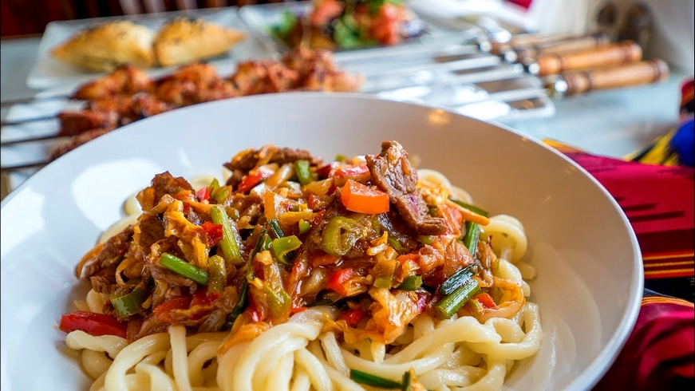
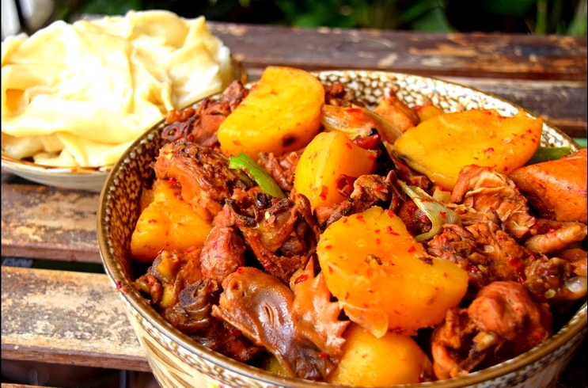

Le Xinjiang, situé à l’extrême ouest de la Chine, est une région vaste et diverse, marquée par une géographie impressionnante. Sa topographie est dominée par des montagnes, des plateaux et des déserts. Le climat y est principalement semi-aride à désertique, avec de fortes variations de température entre l'été et l'hiver, créant des conditions difficiles pour l'agriculture.
Cette diversité géographique joue un rôle clé dans les pratiques agricoles et alimentaires locales, avec une prédominance des cultures adaptées à ce climat difficile. L’irrigation, rendue possible par les rivières issues des montagnes, permet la culture du blé, des fruits secs et des légumes, qui sont des ingrédients de base dans la cuisine du Xinjiang.
Cependant, la région reste très peu densément peuplée, ce qui signifie que les communautés sont souvent dispersées, vivant principalement dans des oasis isolées et des zones urbaines limitées, comme Ürümqi, la capitale.
Vers le IVe siècle, la majorité des Ouïghours menaient un mode de vie nomade, dépendant principalement de l’élevage pour se nourrir. En plus de la viande, les produits laitiers issus de leurs troupeaux constituaient un aliment de base pour de nombreuses familles. Le lait de jument, en particulier, était largement consommé, les chevaux étant également utilisés comme moyen de transport.
Après l’adoption de l’islam comme religion d’État au XIe siècle, de nombreux Ouïghours ont adopté un régime halal. À cette époque, la région est devenue plus sédentaire. Les terres fertiles autour de Hotan, propices à l’agriculture, produisaient une grande variété de fruits, ce qui a favorisé l’expansion démographique. Cette transition a permis une diversification des sources alimentaires, rendant les plats à base de farine, l’agneau et les légumes essentiels dans la cuisine locale.
Stratégiquement situé sur la Route de la Soie, le Xinjiang a été un carrefour de cultures, de religions et de peuples depuis l'Antiquité. Ce réseau de routes commerciales reliant la Chine à l’Asie centrale, au Moyen-Orient et à l’Europe a facilité un échange constant de produits, de savoirs et de traditions. Ces échanges culturels ont façonné la cuisine locale, intégrant des éléments turciques, perses, arabes, ainsi que des influences chinoises. Cette diversité se reflète dans l’utilisation d’épices telles que le cumin, le piment et le poivre du Sichuan, et dans les techniques de cuisson comme les grillades.
La cuisine du Xinjiang repose sur l'extraction des saveurs naturelles des ingrédients utilisés dans chaque plat. Les repas sont généralement composés d'une combinaison de viande, de légumes de saison, de nouilles de blé, de naan ou, plus rarement, de riz.
Les oignons, les carottes, les pommes de terre, les tomates, les poivrons, le chou chinois et l’aubergine sont des ingrédients fréquemment utilisés, car ils sont natifs de la région du Xinjiang et disponibles toute l'année.
Les épices typiques incluent le sel, le poivre noir, les graines de cumin et les flocons de piment rouge.
Les saveurs prédominantes dans la cuisine du Xinjiang sont salées, épicées et fumées.
Dans la cuisine du Xinjiang, l'agneau, le mouton et le bœuf sont les viandes les plus couramment utilisées, en raison de l'importance de l'élevage dans la région. Ces viandes, préparées principalement en ragoûts ou grillées, sont toujours issues d’un abattage halal, en conformité avec les préceptes islamiques suivis par la majorité de la population du Xinjiang. Le poulet et l'oie, bien que moins courants, sont également fréquemment servis.
La présence des produits laitiers, comme le lait de vache, l'ayran, le yaourt et le beurre, qui occupent une place centrale dans l'alimentation quotidienne, constitue un cas relativement unique en Chine.
Le Xinjiang est un véritable patchwork ethnique, abritant de nombreux groupes distincts. Bien que les Ouïghours y soient majoritaires, on y trouve également des Hans, des Kazakhs, des Hui, des Kirghizes, des Ouzbeks et des Tibétains, parmi d'autres.
La cuisine du Xinjiang a été influencée par divers éléments chinois Han, tels que des épices et des modes de cuisson, comme la cuisson au wok, qui a été introduite par l'Est après la dynastie Tang.
Comme la majorité des habitants du Xinjiang sont musulmans, leur cuisine présente des similitudes avec celle d’autres peuples musulmans d’Asie, tels que les Ouzbeks, les Kazakhs et les Turcs. De manière similaire, de nombreux plats Ouïghours se retrouvent également dans d'autres groupes ethniques d'Asie centrale. Un petit-déjeuner traditionnel Ouïghour peut consister en naan et en thé au lait, souvent agrémenté de confitures ou de miel, et accompagné de raisins secs, de noix et d’autres fruits secs.
Plus récemment, la cuisine russe s'est également diffusée à travers le Kirghizistan, anciennement membre de l'Union soviétique, influençant ainsi les pratiques culinaires locales.
Les populations kirghizes et oïrates (un peuple mongol du Xinjiang) consomment également un alcool à base de lait de jument appelé koumis et aïrag respectivement.
Les latiaozi, appelés laghman en ouïghour, sont un plat de nouilles emblématique d'Asie centrale. Ce plat est préparé avec de la viande (principalement de l'agneau ou du bœuf), des légumes et de longues nouilles étirées à la main. Les légumes incluent généralement des poivrons, des aubergines, du radis, des pommes de terre, des oignons, de l'ail ainsi que diverses épices.
Ce plat est également présent dans d'autres pays d'Asie centrale, comme le Kazakhstan, le Kirghizistan, l'Ouzbékistan et le Turkménistan, mais ses origines proviennent très probablement des nouilles lamian du nord de la Chine.

Les chuan'r, ou kawaplar en ouïghour, sont des morceaux de viande grillés sur des brochettes au charbon de bois. Ils peuvent donc être considérés comme un type de kebab. En général, des graines de cumin, des flocons de piment rouge séché, du sel, du poivre noir, ainsi que de l'huile de sésame ou des graines de sésame sont saupoudrés ou brossés dessus.
Bien qu'originaire du Xinjiang, ces brochettes se sont répandues dans le reste du pays, notamment à Pékin, Tianjin, Jinan et Jilin, où elles sont un street food populaire.
Le dapanji, signifiant littéralement « grande assiette de poulet », est un ragoût de poulet épicé accompagné de pommes de terre et de poivrons cuits avec des oignons, de l'ail, des piments, du cumin, de l'anis étoilé et du poivre du Sichuan. Une fois le poulet mangé, des nouilles laghman sont ajoutées à la sauce restante.
Considéré comme un plat chinois han plutôt que ouïghour, ce plat a été inventé dans le nord du Xinjiang par un chef du Sichuan dans les années 1990. Sa saveur riche et sa texture en ont rapidement fait un plat prisé dans la région, et il s'est ensuite répandu dans tout le reste de la Chine.
